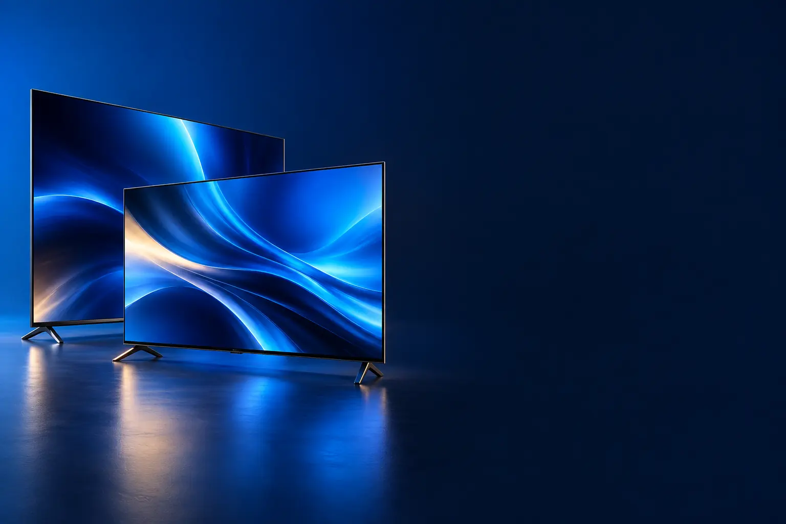

ATÉ 43 POLEGADAS
Melhor smart TV custo-benefício de 32 a 43 polegadas
Para quarto, cozinha e salas pequenas.

Melhor custo-benefício até 43"AOC Roku TV 32" HD (32S5135)
CURADORIA TECHAPROVADO · 2026
TV se escolhe pela distância do sofá e pela luz da sala. Separamos 9 modelos em 3 perfis e dizemos para quem cada um vale a pena.

NOSSA LEITURA
Até 1,5 m: 32" a 43". De 1,5 a 2,5 m: 50" a 55". Acima de 2,5 m: 65" ou mais. Depois, o painel: LED comum, Mini LED ou OLED.
COMECE POR AQUI
ATÉ 43 POLEGADAS
Para quarto, cozinha e salas pequenas.
SALA (50 A 55 POLEGADAS)
O tamanho mais vendido para a sala, sempre em 4K.

65 POLEGADAS OU MAIS
Cinema em casa: telas grandes para salas amplas.

A FICHA, TRADUZIDA
01 - TAMANHO
Uma regra simples: a distância do sofá dividida por 1,5 a 2 dá o tamanho em polegadas que funciona bem em 4K. A 2 metros, 50" a 55" ficam confortáveis.
TV pequena demais cansa; grande demais mostra defeitos em imagens de baixa qualidade, como TV aberta.
Meça a parede ou o rack: a TV é mais larga do que o número de polegadas sugere.
02 - PAINEL
LED comum ilumina a tela por trás de forma uniforme. Mini LED usa milhares de luzes pequenas que acendem por zonas, melhorando contraste e brilho. OLED acende cada ponto sozinho: preto perfeito.
Sala clara pede brilho alto (Mini LED). Sala escura e filmes pedem contraste (OLED).
QLED é um filtro que melhora as cores e aparece em TVs LED e Mini LED.
03 - SISTEMA
O sistema define os apps e a tela inicial. Todos têm Netflix, Prime Video, YouTube, Disney+ e Globoplay.
Roku é o mais simples; Google TV tem mais apps; webOS (LG) e Tizen (Samsung) são rápidos e integram com Alexa e celulares da marca.
Se a TV ficar lenta com os anos, um stick como o Fire TV resolve.
04 - JOGOS
Para PS5 e Xbox Series, procure 120 Hz ou 144 Hz, HDMI 2.1, VRR e ALLM. Eles deixam o jogo mais fluido e com menos atraso.
Em TVs de 60 Hz, os jogos rodam, mas limitados a 60 quadros por segundo.
Ative o modo jogo da TV para reduzir o atraso.
05 - SOM
TVs finas têm alto-falantes pequenos. Dolby Atmos ajuda, mas uma soundbar melhora muito diálogos e graves.
Para filmes, uma soundbar simples já faz diferença.
Ligue a soundbar pela porta HDMI eARC, se a TV tiver.
A CURADORIA EM DETALHE
9 modelos da pesquisa
PERFIL · 3 MODELOS, DA ENTRADA AO TOP DE LINHA
As TVs de 32 a 43 polegadas servem para quarto, cozinha e salas pequenas. Em 32", HD basta; em 43", Full HD ou 4K deixam a imagem mais nítida de perto.
ATÉ 43" · CUSTO-BENEFÍCIO 1 de 3
Melhor custo-benefício até 43"
32" HD · Roku · Google Assistente
Ver preço na AmazonPOR DENTRO DA ESCOLHA
Smart TV de 32 polegadas HD com sistema Roku, design sem bordas, Wi-Fi, conversor digital, audição privada pelo celular e compatibilidade com o Google Assistente.
O sistema Roku é dos mais simples de usar. Mais de 2,3 mil avaliações.
| Tamanho | 32" |
|---|---|
| Resolução | HD |
| Sistema | Roku |
Fonte: ficha e descrição do anúncio, conferidas em 02/11/2026. Dados informados pelo fabricante. Nota e número de avaliações são de compradores, não teste do TechAprovado.

ATÉ 43" · INTERMEDIÁRIO 2 de 3
43" Full HD · ThinQ AI · Alexa integrada
Ver preço na AmazonPOR DENTRO DA ESCOLHA
Smart TV LG de 43 polegadas Full HD com webOS, ThinQ AI, Amazon Alexa integrada e reconhecimento de voz.
Mais de 2,2 mil avaliações e Alexa no próprio controle.
| Tamanho | 43" |
|---|---|
| Resolução | Full HD |
| Sistema | webOS |
Fonte: ficha e descrição do anúncio, conferidas em 02/11/2026. Dados informados pelo fabricante. Nota e número de avaliações são de compradores, não teste do TechAprovado.

ATÉ 43" · TOP DE LINHA 3 de 3
Top de linha até 43"
43" 4K · HDR · Tizen
Ver preço na AmazonPOR DENTRO DA ESCOLHA
Smart TV Samsung de 43 polegadas com resolução 4K, processador Crystal 4K que melhora a resolução do conteúdo e HDR com realce de contraste.
4K em 43" faz diferença quando o sofá fica a menos de 1,5 m.
| Tamanho | 43" |
|---|---|
| Resolução | 4K |
| Sistema | Tizen |
Fonte: ficha e descrição do anúncio, conferidas em 02/11/2026. Dados informados pelo fabricante. Nota e número de avaliações são de compradores, não teste do TechAprovado.
PERFIL · 3 MODELOS, DA ENTRADA AO TOP DE LINHA
Para a maioria das salas, 50 a 55 polegadas em 4K é o tamanho certo. Os degraus acima trazem Mini LED, que melhora o contraste e o brilho, e recursos para jogos.
50 A 55" · CUSTO-BENEFÍCIO 1 de 3
Melhor custo-benefício para a sala
Processador α7 AI Gen8 · webOS 25 · Alexa e Google Cast
Ver preço na AmazonPOR DENTRO DA ESCOLHA
Smart TV 4K de 50 polegadas com processador α7 AI Gen8 e 4K Super Upscaling, webOS 25, Alexa integrada, Google Cast e controle Smart Magic com IA.
Mais de 1,8 mil avaliações e vendida pela Amazon.
| Tamanho | 50" |
|---|---|
| Resolução | 4K |
| Painel | LED |
| Sistema | webOS |
Fonte: ficha e descrição do anúncio, conferidas em 02/11/2026. Dados informados pelo fabricante. Nota e número de avaliações são de compradores, não teste do TechAprovado.

50 A 55" · AVANÇADO 2 de 3
Mini LED · 144 Hz · Dolby Vision IQ e Atmos · Google TV
Ver preço na AmazonPOR DENTRO DA ESCOLHA
Tela QLED Mini LED 4K de 55 polegadas com 144 Hz, VRR e ALLM, 4 entradas HDMI 2.1, Dolby Vision IQ, Dolby Atmos, HDR10+ e Google TV.
Mini LED, 144 Hz e HDMI 2.1 por um preço próximo de TVs 4K comuns.
| Tamanho | 55" |
|---|---|
| Resolução | 4K |
| Painel | QD-Mini LED, 144 Hz |
| Sistema | Google TV |
Fonte: ficha e descrição do anúncio, conferidas em 02/11/2026. Dados informados pelo fabricante. Nota e número de avaliações são de compradores, não teste do TechAprovado.

50 A 55" · TOP DE LINHA 3 de 3
Top de linha para a sala
Mini LED Pro · tela fosca · Vision AI
Ver preço na AmazonPOR DENTRO DA ESCOLHA
Neo QLED 4K de 50 polegadas com Mini LEDs Pro, tela fosca (Matte) livre de reflexos, processador com IA, controle por gestos e modo game com IA.
A tela fosca é o diferencial: elimina o reflexo de janelas e lâmpadas.
| Tamanho | 50" |
|---|---|
| Resolução | 4K |
| Painel | Neo QLED Mini LED, fosco |
| Sistema | Tizen |
Fonte: ficha e descrição do anúncio, conferidas em 02/11/2026. Dados informados pelo fabricante. Nota e número de avaliações são de compradores, não teste do TechAprovado.
PERFIL · 3 MODELOS, DA ENTRADA AO TOP DE LINHA
Telas de 65 polegadas ou mais pedem sala com pelo menos 2,5 metros entre o sofá e a TV. Nesse tamanho, a qualidade do painel (Mini LED ou OLED) faz ainda mais diferença.
65" OU MAIS · CUSTO-BENEFÍCIO 1 de 3
Melhor custo-benefício em 65"
65" Mini LED · 144 Hz · HDMI 2.1 · Google TV
Ver preço na AmazonPOR DENTRO DA ESCOLHA
A versão de 65 polegadas da C6K: QLED Mini LED 4K, 144 Hz, 4 HDMI 2.1, Dolby Vision IQ, Dolby Atmos, HDR10+ e Google TV.
Mini LED em 65" pelo preço de uma TV 4K comum desse tamanho.
| Tamanho | 65" |
|---|---|
| Resolução | 4K |
| Painel | QD-Mini LED, 144 Hz |
| Sistema | Google TV |
Fonte: ficha e descrição do anúncio, conferidas em 02/11/2026. Dados informados pelo fabricante. Nota e número de avaliações são de compradores, não teste do TechAprovado.

65" OU MAIS · ALTERNATIVA 2 de 3
Outro caminho: a maior tela
75" 4K · Crystal 4K · Tizen
Ver preço na AmazonPOR DENTRO DA ESCOLHA
Smart TV Samsung de 75 polegadas 4K com processador Crystal 4K, HDR com realce de contraste e Samsung TV Plus.
75" por preço acessível. Para filmes no escuro, a TCL Mini LED de 65" tem contraste melhor.
| Tamanho | 75" |
|---|---|
| Resolução | 4K |
| Painel | LED |
| Sistema | Tizen |
Fonte: ficha e descrição do anúncio, conferidas em 02/11/2026. Dados informados pelo fabricante. Nota e número de avaliações são de compradores, não teste do TechAprovado.

65" OU MAIS · TOP DE LINHA 3 de 3
Top de linha da lista
OLED · pixels autoiluminados · Vision AI
Ver preço na AmazonPOR DENTRO DA ESCOLHA
TV OLED 4K de 65 polegadas com 8 milhões de pixels autoiluminados (preto perfeito e contraste infinito), controle por gestos, modo AI e conversão de conteúdo para HDR.
OLED é a melhor imagem de TV: cada ponto acende e apaga sozinho.
| Tamanho | 65" |
|---|---|
| Resolução | 4K |
| Painel | OLED |
| Sistema | Tizen |
Fonte: ficha e descrição do anúncio, conferidas em 02/11/2026. Dados informados pelo fabricante. Nota e número de avaliações são de compradores, não teste do TechAprovado.
Nenhum modelo encontrado. Tente outro termo ou volte para Todos.
LADO A LADO
| Modelo | Perfil | Posição | Tamanho | Destaque | Nota (avaliações) |
|---|---|---|---|---|---|
| AOC Roku TV 32" HD (32S5135) | Até 43" | Custo-benefício | 32" | 32" HD · Roku · Google Assistente | 4,7 (2,4 mil) |
| LG 43" Full HD (43LR6700) | Até 43" | Intermediário | 43" | 43" Full HD · ThinQ AI · Alexa integrada | 4,7 (2,2 mil) |
| Samsung 43" Crystal UHD 4K (U8600F) | Até 43" | Top de linha | 43" | 43" 4K · HDR · Tizen | 4,7 (258) |
| LG 50" UHD 4K (50UA85) | 50 a 55" | Custo-benefício | 50" | Processador α7 AI Gen8 · webOS 25 · Alexa e Google Cast | 4,6 (1,8 mil) |
| TCL 55" QD-Mini LED 4K (C6K) | 50 a 55" | Avançado | 55" | Mini LED · 144 Hz · Dolby Vision IQ e Atmos · Google TV | 4,7 (391) |
| Samsung 50" Neo QLED 4K (QN90F) | 50 a 55" | Top de linha | 50" | Mini LED Pro · tela fosca · Vision AI | 4,5 (197) |
| TCL 65" QD-Mini LED 4K (C6K) | 65" ou mais | Custo-benefício | 65" | 65" Mini LED · 144 Hz · HDMI 2.1 · Google TV | 4,4 (269) |
| Samsung 75" Crystal UHD 4K (U8100F) | 65" ou mais | Alternativa | 75" | 75" 4K · Crystal 4K · Tizen | 4,5 (1,7 mil) |
| Samsung 65" OLED 4K (S85F) | 65" ou mais | Top de linha | 65" | OLED · pixels autoiluminados · Vision AI | 4,7 (296) |
CONSIDERAÇÕES FINAIS
TVs com estoque de uma unidade, como a Samsung OLED de 55" e a Hisense de 65", ficaram de fora na data da conferência.
A LG 50" UHD 4K (50UA85) para a sala; a TCL C6K para quem quer Mini LED.
Divida a distância do sofá por 1,5 a 2: a 2 metros, 50" a 55".
Mini LED para salas claras; OLED para quem assiste no escuro e quer o melhor contraste.
Uma com 120 Hz ou mais e HDMI 2.1, como a TCL C6K.
Porque ele muda várias vezes por dia. O botão leva ao valor atualizado na loja.
TRANSPARÊNCIA EDITORIAL
Separamos as TVs pelo tamanho e montamos uma escada de preço em cada perfil. Cada modelo precisa responder com clareza "para quem ele é o certo".
Em cada perfil há modelos em faixas de preço diferentes, e cada degrau precisa entregar algo que o anterior não entrega. Dois modelos com a mesma proposta não entram juntos.
Ficha, nota e número de avaliações foram conferidos nos anúncios das lojas em 02/11/2026. As avaliações são de compradores, não teste nosso.
Os links de compra desta página são de afiliado: se você comprar por eles, o TechAprovado pode ganhar uma comissão, sem custo adicional para você. Isso não muda a ordem nem a escolha dos produtos.
📲 GUIAS E DICAS NO SEU FEED
Dicas práticas antes de comprar, em carrosséis e vídeos curtos, sempre com link para o guia completo.